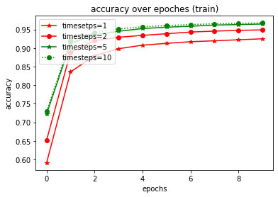
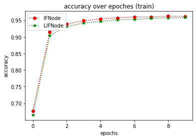
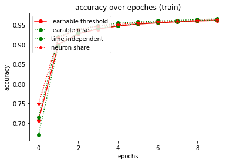
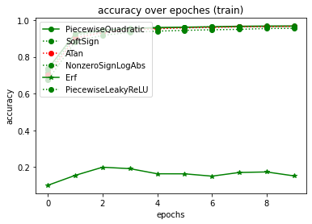
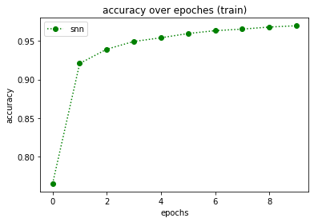

Spiking Neural Network with Eve¶
In this script, we will build a general spiking neural network with eve-mli, then we will further investigating the influence of different Node, i.e. IFNode and LIFNode combined with different surrotage functions.
# import necessary packages.
# at the beginning, ensure that the eve-mli package is in your python path.
# or you just install it via `pip install eve-mli`.
import os
import time
from datetime import datetime
import random
import numpy as np
import torch as th
import torch.nn as nn
import torch.nn.functional as F
import eve
import eve.app
import eve.app.model
import eve.app.trainer
import eve.core
import eve.app.space as space
import eve.core.layer
from matplotlib import pyplot as plt
%matplotlib inline
os.environ["CUDA_VISIBLE_DEVICES"] = '1'
# build a basic network for trainer, use Poisson Encoder as default
class mnist(eve.core.Eve):
def __init__(self,
timesteps: int = 5,
node: str="IFNode",
voltage_threshold: float = 1.0,
voltage_reset: float = 0.0,
learnable_threshold: bool = False,
learnable_reset: bool = False,
time_dependent: bool = True,
neuron_wise: bool = True,
surrogate_fn: str = "Sigmoid",
binary: bool = True,
**kwargs,):
super().__init__()
# we support IFNode and LIFNode,
# in non-spiking mode, the IFNode equals to a ReLU operation
# the LIFNode equals to a LeakyReLU operation.
node = getattr(eve.core.node, node)
def build_node(state):
return node(state,
voltage_threshold=voltage_threshold,
voltage_reset=voltage_reset,
learnable_threshold=learnable_threshold,
learnable_reset=learnable_reset,
time_dependent=time_dependent,
neuron_wise=neuron_wise,
surrogate_fn=surrogate_fn,
binary=binary,
**kwargs,)
self.encoder = eve.core.layer.PoissonEncoder(timesteps=timesteps)
self.conv1 = nn.Sequential(
nn.Conv2d(1, 4, 3, stride=2, padding=1),
nn.BatchNorm2d(4),
)
self.node1 = build_node(eve.core.State(self.conv1))
self.conv2 = nn.Sequential(
nn.Conv2d(4, 8, 3, stride=2, padding=1),
nn.BatchNorm2d(8),
)
self.node2 = build_node(eve.core.State(self.conv2))
self.conv3 = nn.Sequential(
nn.Conv2d(8, 16, 3, stride=2, padding=1),
nn.BatchNorm2d(16),
)
self.node3 = build_node(eve.core.State(self.conv3))
self.linear1 = nn.Linear(16 * 4 * 4, 16)
self.node4 = build_node(eve.core.State(self.linear1))
self.linear2 = nn.Linear(16, 10)
def forward(self, x):
encoder = self.encoder(x)
conv1 = self.conv1(encoder)
node1 = self.node1(conv1)
conv2 = self.conv2(node1)
node2 = self.node2(conv2)
conv3 = self.conv3(node2)
node3 = self.node3(conv3)
node3 = th.flatten(node3, start_dim=1).unsqueeze(dim=1)
linear1 = self.linear1(node3)
node4 = self.node4(linear1)
linear2 = self.linear2(node4)
return linear2.squeeze(dim=1)
# define a MnistClassifier
# Classifier uses the corss entropy as default.
# in most case, we just rewrite the `prepare_data`.
class MnistClassifier(eve.app.model.Classifier):
def prepare_data(self, data_root: str):
from torch.utils.data import DataLoader, random_split
from torchvision import transforms
from torchvision.datasets import MNIST
train_dataset = MNIST(root=data_root,
train=True,
download=True,
transform=transforms.ToTensor())
test_dataset = MNIST(root=data_root,
train=False,
download=True,
transform=transforms.ToTensor())
self.train_dataset, self.valid_dataset = random_split(
train_dataset, [55000, 5000])
self.test_dataset = test_dataset
self.train_dataloader = DataLoader(self.train_dataset,
batch_size=128,
shuffle=True,
num_workers=4)
self.test_dataloader = DataLoader(self.test_dataset,
batch_size=128,
shuffle=False,
num_workers=4)
self.valid_dataloader = DataLoader(self.valid_dataset,
batch_size=128,
shuffle=False,
num_workers=4)
def forward(self, batch_idx, batch, *args, **kwargs):
# in spiking mode, you should reset the membrane voltage every time.
self.reset()
x, y = batch
y_hat = [self.model(x) for _ in range(self.model.encoder.timesteps)]
y_hat = th.stack(y_hat, dim=0).mean(dim=0)
return {
"loss": F.cross_entropy(y_hat, y),
"acc": self._top_one_accuracy(y_hat, y),
}
# store accuracy result
y = {}
def plot():
global y
keys, values = list(y.keys()), list(y.values())
for k, v in y.items():
plt.plot(v,
color='green' if random.random() > 0.5 else "red",
marker='o' if random.random() > 0.5 else "*",
linestyle='-' if random.random() > 0.5 else ":",
label=k)
plt.title('accuracy over epoches (train)')
plt.xlabel('epochs')
plt.ylabel('accuracy')
plt.legend(loc="upper left")
plt.show()
def train(net, exp_name: str = "snn", data_root: str = "/home/densechen/dataset"):
global y
# replace the data_root for your path.
classifier = MnistClassifier(net)
classifier.prepare_data(data_root=data_root)
# use default configuration
classifier.setup_train()
# assign model to trainer
eve.app.trainer.BaseTrainer.assign_model(classifier)
trainer = eve.app.trainer.BaseTrainer()
# train 10 epoches and report the final accuracy
y[exp_name] = []
tic = datetime.now()
for _ in range(10):
info = trainer.fit()
y[exp_name].append(info["acc"])
info = trainer.test()
toc = datetime.now()
y[exp_name] = np.array(y[exp_name])
print(f"Test Accuracy: {info['acc']*100:.2f}%, Elapsed time: {toc-tic}")
IFNode with different timesteps¶
# reset y
y = {}
# define spiking neural network with different timesteps
ifnode_spiking_neural_network_1_timesteps = mnist(timesteps=1).spike()
ifnode_spiking_neural_network_2_timesteps = mnist(timesteps=2).spike()
ifnode_spiking_neural_network_5_timesteps = mnist(timesteps=5).spike()
ifnode_spiking_neural_network_10_timesteps = mnist(timesteps=10).spike()
# train and compare the influence of different timesteps.
print("===> timesteps: 1")
train(ifnode_spiking_neural_network_1_timesteps, "timesetps=1")
print("===> timesteps: 2")
train(ifnode_spiking_neural_network_2_timesteps, "timesteps=2")
print("===> timesteps: 5")
train(ifnode_spiking_neural_network_5_timesteps, "timesteps=5")
print("===> timesteps: 10")
train(ifnode_spiking_neural_network_10_timesteps, "timesteps=10")
plot()
===> timesteps: 1
Test Accuracy: 92.84%, Elapsed time: 0:01:00.376058
===> timesteps: 2
Test Accuracy: 95.23%, Elapsed time: 0:01:27.988771
===> timesteps: 5
Test Accuracy: 96.73%, Elapsed time: 0:02:39.402739
===> timesteps: 10
Test Accuracy: 96.38%, Elapsed time: 0:04:20.826122

IFNode vs LIF Node¶
# reset y
y = {}
# define IFNode network
ifnode_spiking_neural_network = mnist(node="IFNode").spike()
# define LIFNode network
lifnode_spiking_neural_network = mnist(node="LIFNode", tau=1.0).spike()
# train and compare
print("===> IFNode")
train(ifnode_spiking_neural_network, "IFNode")
print("===> LIFNode, tau=1.0")
train(lifnode_spiking_neural_network, "LIFNode")
plot()
===> IFNode
Test Accuracy: 96.10%, Elapsed time: 0:02:40.809373
===> LIFNode, tau=1.0
Test Accuracy: 96.30%, Elapsed time: 0:02:54.205864

IFNode with different configurations¶
# reset y
y = {}
# define IFNode network with different configuration
ifnode_spiking_neural_network_learnable_threshold = mnist(learnable_threshold = True).spike()
print("===> IFNode learnable threshold")
train(ifnode_spiking_neural_network_learnable_threshold, "learnable threshold")
ifnode_spiking_neural_network_learnable_reset = mnist(learnable_reset=True).spike()
print("===> IFNode learnable reset")
train(ifnode_spiking_neural_network_learnable_reset, "learable reset")
ifnode_spiking_neural_network_time_independent = mnist(time_dependent=False).spike()
print("===> IFNode time independent")
train(ifnode_spiking_neural_network_time_independent, "time independent")
ifnode_spiking_neural_network_neuron_share = mnist(neuron_wise=False).spike()
print("===> IFNode neuron share")
train(ifnode_spiking_neural_network_neuron_share, "neuron share")
plot()
===> IFNode learnable threshold
Test Accuracy: 95.34%, Elapsed time: 0:02:47.300100
===> IFNode learnable reset
Test Accuracy: 88.60%, Elapsed time: 0:02:44.121851
===> IFNode time independent
Test Accuracy: 96.38%, Elapsed time: 0:02:36.499136
===> IFNode neuron share
Test Accuracy: 95.99%, Elapsed time: 0:02:41.603358

IFNode with different surrogate functions¶
# reset y
y = {}
ifnode_spiking_neural_network_PiecewiseQuadratic = mnist(surrogate_fn="PiecewiseQuadratic").spike()
print("===> IFNode PiecewiseQuadratic")
train(ifnode_spiking_neural_network_PiecewiseQuadratic, "PiecewiseQuadratic")
ifnode_spiking_neural_network_SoftSign = mnist(surrogate_fn="SoftSign").spike()
print("===> IFNode SoftSign")
train(ifnode_spiking_neural_network_SoftSign, "SoftSign")
ifnode_spiking_neural_network_ATan = mnist(surrogate_fn="ATan").spike()
print("===> IFNode ATan")
train(ifnode_spiking_neural_network_ATan, "ATan")
ifnode_spiking_neural_network_NonzeroSignLogAbs = mnist(surrogate_fn="NonzeroSignLogAbs").spike()
print("===> IFNode NonzeroSignLogAbs")
train(ifnode_spiking_neural_network_NonzeroSignLogAbs, "NonzeroSignLogAbs")
ifnode_spiking_neural_network_Erf = mnist(surrogate_fn="Erf").spike()
print("===> IFNode Erf")
train(ifnode_spiking_neural_network_Erf, "Erf")
ifnode_spiking_neural_network_PiecewiseLeakyReLU = mnist(surrogate_fn="PiecewiseLeakyReLU").spike()
print("===> IFNode PiecewiseLeakyReLU")
train(ifnode_spiking_neural_network_PiecewiseLeakyReLU, "PiecewiseLeakyReLU")
plot()
===> IFNode PiecewiseQuadratic
Test Accuracy: 96.59%, Elapsed time: 0:02:50.522003
===> IFNode SoftSign
Test Accuracy: 96.74%, Elapsed time: 0:02:46.623716
===> IFNode ATan
Test Accuracy: 94.56%, Elapsed time: 0:02:44.426878
===> IFNode NonzeroSignLogAbs
Test Accuracy: 95.71%, Elapsed time: 0:02:39.817249
===> IFNode Erf
Test Accuracy: 26.70%, Elapsed time: 0:02:43.860484
===> IFNode PiecewiseLeakyReLU
Test Accuracy: 96.82%, Elapsed time: 0:02:47.646427

Hybrid¶
# reset y
y = {}
spiking_neural_network = mnist(
timesteps = 10,
node ="IFNode",
voltage_threshold = 1.0,
voltage_reset = 0.0,
learnable_threshold = False,
learnable_reset = True,
time_dependent = True,
neuron_wise = True,
surrogate_fn = "SoftSign",
binary = True,).spike()
print("===> Hybrid Spiking Neural Network")
train(spiking_neural_network)
plot()
===> Hybrid Spiking Neural Network
Test Accuracy: 96.68%, Elapsed time: 0:04:11.330691
